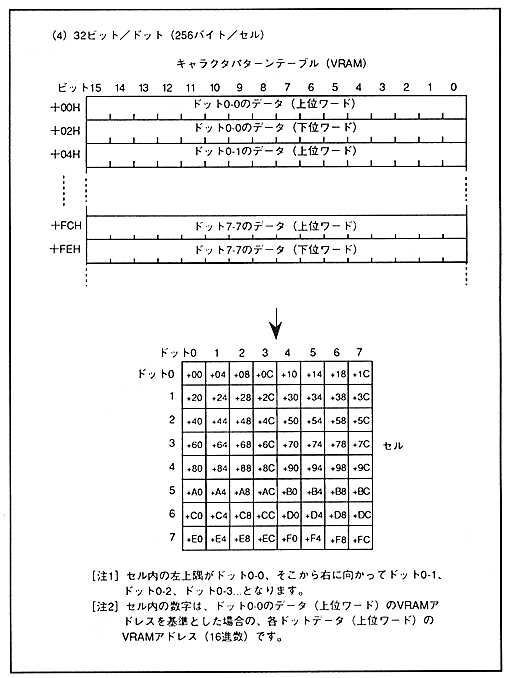

Return to previous page ｜ Return to menu ｜ Go to next page
- Figure 4.5 Cell data structure based on the number of character colors (continued)

-
Transparent dots
- The dot color code (transparent code) that becomes transparent dots varies depending on the color format. When the color format is the palette format, transparent dots are created when all bits per dot are 0. In the case of RGB format, transparent dots are created when the most significant bit of the dot data is 0.
In the case of palette format, the color data at the top of the palette corresponds to the transparent code and is not normally used. If the transparent code is disabled, this color data can be used, and its control is performed by the screen display enable register.
Return to previous page ｜ Return to menu ｜ Go to next page